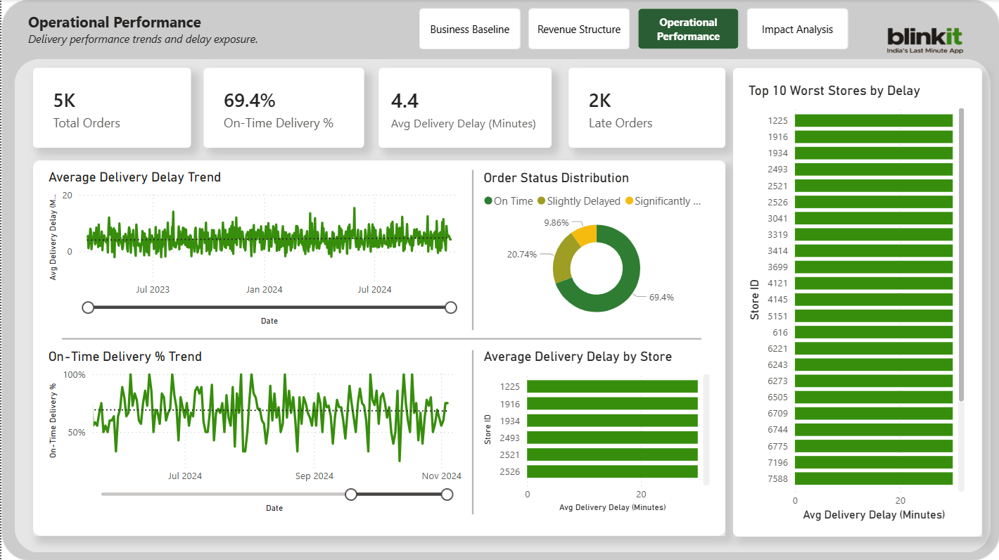

Business Problem
Blinkit operates a fast-delivery grocery model where operational efficiency and product mix significantly affect revenue performance. The objective of this analysis was to understand how revenue is distributed across products, customers, and delivery performance, and whether delivery delays influence order value or revenue exposure.
Analytical Questions
- → Which products contribute the most to total revenue?
- → How concentrated is revenue across top products?
- → Do delivery delays impact average order value?
- → Which stores contribute most to delayed orders?
Data Model
The analysis was built using a star schema to create a scalable semantic model for reporting and KPI calculations. A central fact table stores order-level transactions while dimension tables capture customer, product, and time attributes.
📊 Star Schema Diagram
(Fact Table ← Dimension Tables: Customers, Products, Time, Stores)
Metric Design (DAX)
A semantic metric layer was implemented using DAX measures to standardize KPI definitions across the Power BI report.
Average Order Value (AOV)
DIVIDE(
[Total Revenue],
DISTINCTCOUNT(
FactOrderItems[order_id]
)
)
Orders Delayed %
DIVIDE( [Delayed Orders], [Total Orders] )
Power BI Dashboards

Business Baseline
KPI tracking and performance metrics

Revenue Structure
Product mix and revenue distribution

Operational Performance
Delivery delays and store performance

Impact Analysis
Delay impact on AOV and revenue
Key Insights
- Approximately 30.6% of orders experienced delivery delays
- AOV for delayed vs on-time orders remained stable
- Revenue impact comes from delayed order volume, not basket size
- Revenue follows a long-tail product distribution
Business Recommendations
- Monitor % Orders Delayed as a core operational KPI to track delivery performance over time.
- Prioritize operational improvements that reduce the overall frequency of delayed orders, since revenue impact is driven by delay volume rather than reduced basket size.
- Track revenue concentration across products to ensure inventory availability for high-performing categories that contribute the largest share of revenue.
- Implement operational dashboards that allow teams to monitor delivery delay patterns and order volumes in real time.